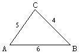
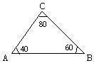
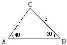
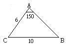

解三角形(II)
程式由網友 roviury 提供。
更新日期: 2014年8月31日
程式可解一個三角形，計算內容與程式正弦、餘弦定律及三角形面積相同，不過使用者不用對正弦及餘弦定律有任何認識，只要輸入三角形的三邊及三邊其中三個資料(最少要輸入一邊資料)，答案會由第一個輸入資料依次序(邊角邊....或角邊角)顯示，要注意邊要以負數形式輸入，以順時針或逆時針方向輸入已知三個已知變數(依邊角邊角.....或角邊角邊....排列次序)。若果輸入資料有邊及角同時存在，第一及第二個資料(邊及角必定要相鄰關係)， 輸入的旋轉方向(順時針或逆時針)為排列次序(邊角邊角.....或角邊角邊....)的最短路綫。
注意: πr 是按 Shift EXP Shift Ans 2，90o 按 90 Shift Ans 1。
程式 (197 bytes，使用記憶A, B, C, D, X及Y)
While 1: ?→A: ?→B: ?→C: 0>AB => Goto 0: B→X: -
sin(C) ÷ sin(A→B:
0>A => cos-1( (A2+X2-C2)÷
( 2AX→B:
X→C: Lbl 0: 0>C→D: Abs(A◢
Abs(B◢ 0>A => Break: D =>
πr - A - sin-1( C-1
Bsin(A→C:
C◢
Pol( B tan(90o - A - C , -B ) sin(A◢ Y◢ X sin(C◢ - . 5AnsBsin(A◢
YD - A→C: Ans>0 => Goto 0: WhileEnd : cos-1(
D => Asin(B+C) ÷ sin(C→C:
- C◢ Pol(Ans + Acos(B , -Asin(B: Y◢ X◢ πr - B - Y◢ . 5ACsin(B
註1: 若不用計算三邊的比例(即輸入為AAA時)，可以刪除第一行中的 - sin(C) ÷ sin(A→B: ，程式可以縮短10 bytes。
註2: 最少要有三個已知變數(邊或角)，否則無法計算。
註3: 輸入的資料若不能構成三角形，則會出現異常結果(例如: 0，負數，角度大於或等於180o，Math ERROR)。
註4: 注意ASS這種三角形會出現 兩組解答。
註5: 若多於三個己知變數，可任意選取其中三個已知變數輸入，但要注意有可能出現兩組解答(ASS情況)，若出現這種情況，其中一組不是要找的答案，請用未輸入的已知變數核對清楚那組答案是正確。
註6: 邊的資料必定要以負值形式輸，否則無法正確計算。
註7: 若只知道三角及先輸入最小的角，可以求得三邊的比例。
註8:SAA及ASS的三角形輸入次序不能倒轉,若出現異常結果(MATH ERROR,顯示的邊,角與原本資料的不同),請把次序倒回
註9: 如果是使用fx-3650P II或fx-50FH II，上述程式中紫色的開括號 ( 可以省略，程式長度可減1 byte。
例題1: a=4, b=5, c=6，求∠A、∠B、∠C及三角形面積。

注意:要在DEG Mode執行
按 Prog 1 再按 -4 EXE -5 EXE -6 EXE (顯示a為4)
EXE (顯示∠C=82.8192o) EXE (顯示b為5)
EXE (顯示∠A=41.410o) EXE (顯示c為6)
EXE (顯示∠B=55.771o) EXE (顯示面積為9.9216)
例題2: ∠A = 40o, ∠B = 60o, ∠C = 80o) ，求三邊的比例。

先輸入最小的角使邊長皆大於1
按 Prog 1 再按 40 EXE 60 EXE 80 EXE (顯示∠A為40o)
EXE (顯示c為 1.5321) EXE (顯示∠B為60o)
EXE (顯示a為 1) EXE (顯示∠C為80o)
EXE (顯示b為 1.3473) EXE (顯示面積為0.663(基於上述假設邊的面積 ))
a : b : c = 1: 1.3473 : 1.5321
例題3: a=4, b=5, ∠C=40o ，求∠A、∠B、c及三角形面積。
注意:要在DEG Mode執行
按 Prog 1 再按 -4 EXE 40 EXE -5 EXE (顯示a為4)
EXE (顯示∠C=40o) EXE (顯示b為5)
EXE (顯示∠A=53.024o) EXE (顯示c為3.2184)
EXE (顯示∠B=86.976o)EXE (顯示面積為6.4279)
例題4: ∠A = 40o, c = 5, ∠B = 40o，求 a、b、∠C及三角形面積。

注意:要在DEG Mode執行
按 Prog 1 再按 40 EXE -5 EXE 40 EXE (顯示∠A為40o)
EXE (顯示c為 5) EXE (顯示∠B為40o)
EXE (顯示a為 3.2635) EXE (顯示∠C為100o)
EXE (顯示b為 3.2635) EXE (顯示面積為5.2444)
計算完結後 請按 AC 終止程式
例題5: ∠A = 40o，a = 5，∠B = 60o，求b，∠C及c。

注意:要在DEG Mode執行
按 Prog 1 再按 - 5 EXE 60 EXE 40 EXE (顯示a為5)
EXE (顯示∠B為 60o) EXE (顯示c為7.6604)
EXE (顯示∠A為 40o) EXE (顯示b為6.7365)
EXE (顯示∠C為 80o) EXE (顯示面積為16.5853)
例題6: ∠A = 150o，a = 10，b = 6，求∠B，∠C及c。

注意:要在DEG Mode執行
按 Prog 1 再按 150 EXE -6 EXE -10 EXE (顯示∠A為 150o)
EXE (顯示b為6) EXE (顯示∠C為 12.5424o)
EXE (顯示a為10) EXE (顯示∠B為17.4576o)
EXE (顯示c為4.3432) EXE (顯示面積為6.51486)
計算完結後 請按 AC 終止程式
例題7: ∠A = 50o，a = 10，b = 13，求∠B，∠C及c。

注意:要在DEG Mode執行
按 Prog 1 再按 50 EXE -13 EXE -10 EXE (顯示∠A為 50o)
EXE (顯示b為13) EXE (顯示∠C為 45.2168o) EXE (顯示a為10)
EXE (顯示∠B為84.7832o) EXE (顯示c為9.2655)
EXE (顯示面積為46.1355)
EXE (程式未終止及顯示另一組答案，∠A為 50o)
EXE (顯示b為13) EXE (顯示∠C為 34.7832o) EXE (顯示a為10)
EXE (顯示∠B為95.2168o) EXE (顯示c為7.44699)
EXE (顯示面積為37.0807)
計算完結後 請按 AC 終止程式
返回 CASIO fx-50FH、fx-3650P II、fx-50FH II及fx-50F PLUS 程式集